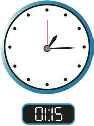
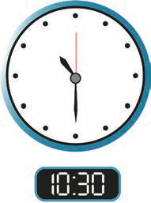
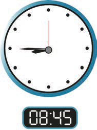
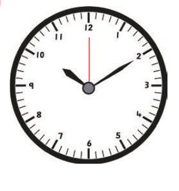
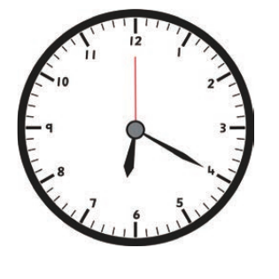

Example 4
Read the following analogue clock faces with no numbers and digital clock faces with numbers. Write down the times shown.
(a)

01:15
(b)

10:30
(c)

08:45
Answer
(a) Fifteen minutes past one
(b) Thirty minutes past ten or half past ten
(c) Fourty-five minutes past eight
Example 5
Read the following clock faces and then write the time in numerals and in words.

